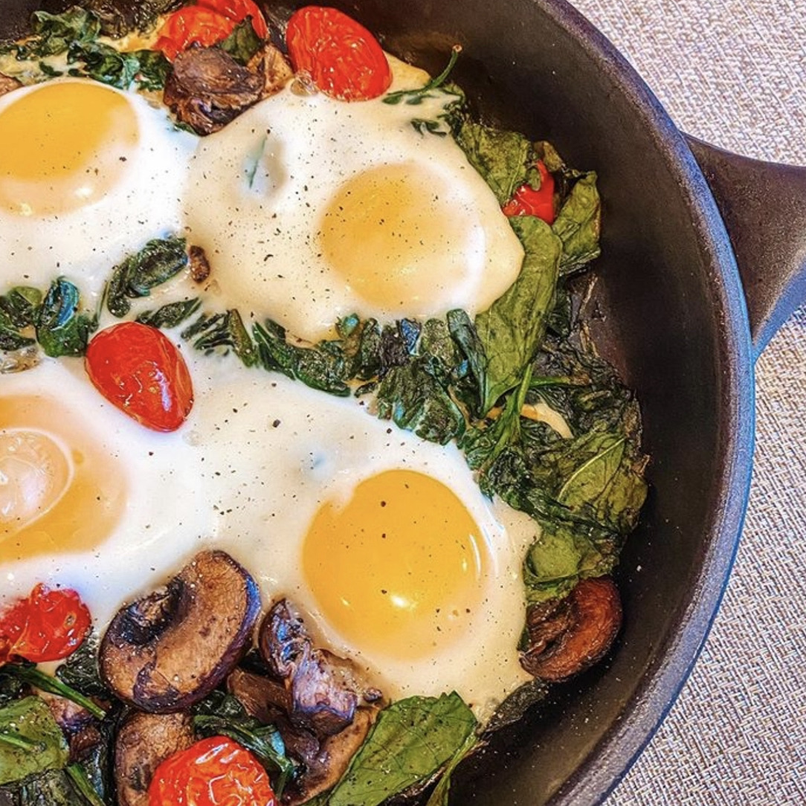
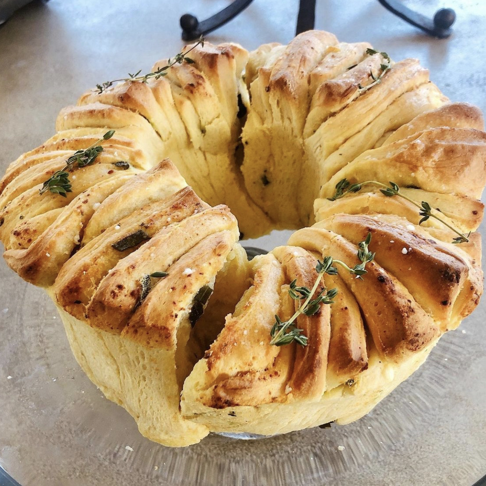
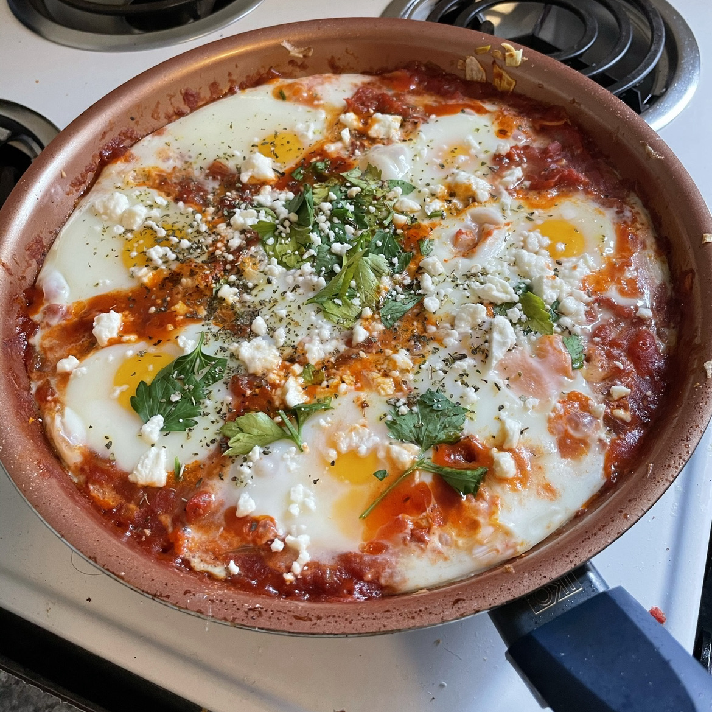
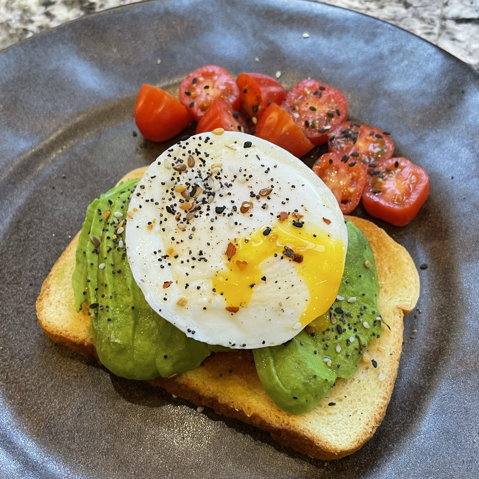
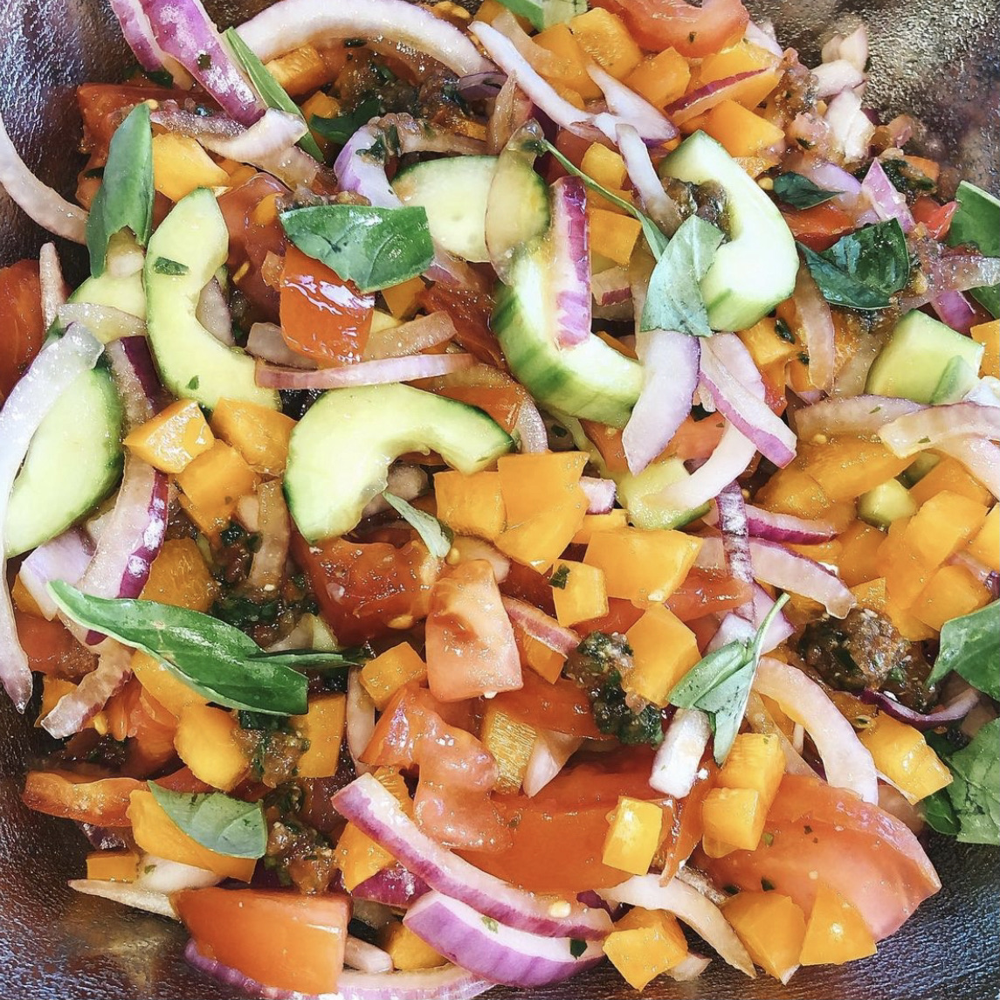
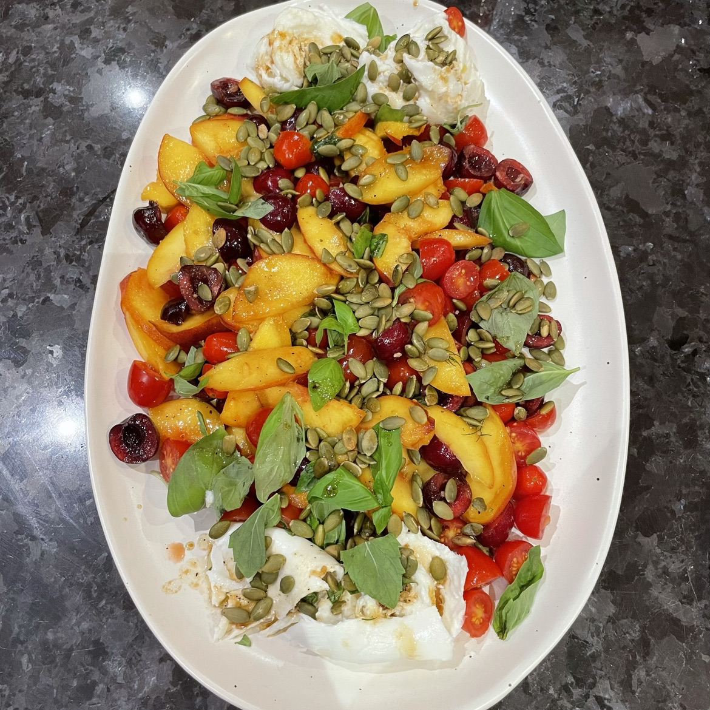

Find my 10 favorite recent recipes (updated weekly)!
This first image I made with my roomate at college. The Shakshuka With Mushrooms was something new for us. We like to make a lot of shaksuka, but wanted to add a twist to it, so we did a spinach base rather than a tomato base.
During quarantine, my sister and I cooked every single day. We loved making extravagent meals and always added something fun to the mix. This day we made a Pull-Apart Garlic Butter Bread Wreath. It was so tasty and fun to make with someone.
At school least year, one of the organizations I am a part of did a cooking class via Zoom and everyone made Shakshuka "together". This was such a fun activity and it tasted amazing. I would definitely recommend making this shakshuka. While it is just an ordinary shakshuka with feta, you will be amazed at how good it tastes.
This very simple recipe is an easy go-to for a yummy breakfast. I would say it is a few notches up from a typical avocado toast. Adding this poached egg makes all the difference. Following this Poached Egg and Avocado Toast recipe from Pinch of Yum will change your life (or how you make avocado toast) forever!
I know you have probably heard of gazpacho soup, but have you every hear of a gazpacho salad? Whlie it may sound different, it is definitely worth it. This is by far one of the best salads I have ever made. The flavor was immaculate and the texture was perfect. Better yet, it was so easy and simple to make.
As Half Baked Harvest likes to say, this colorful salad is like summer on a plate. This wonderful blend of ingredients is nothing like your typical salad. Honestly, it's like all of my favorite ingredients put together in one salad. This salad never disappoints, whether it just be for you or even for a large gathering.